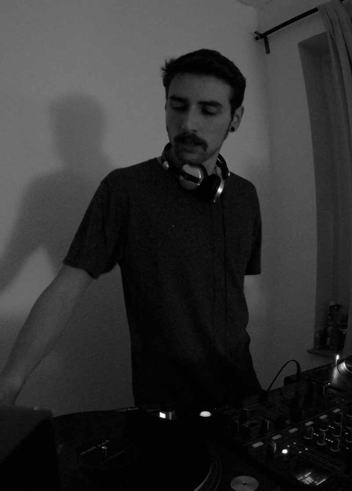
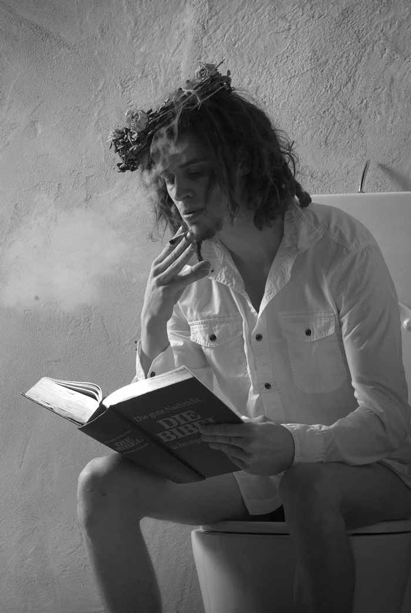
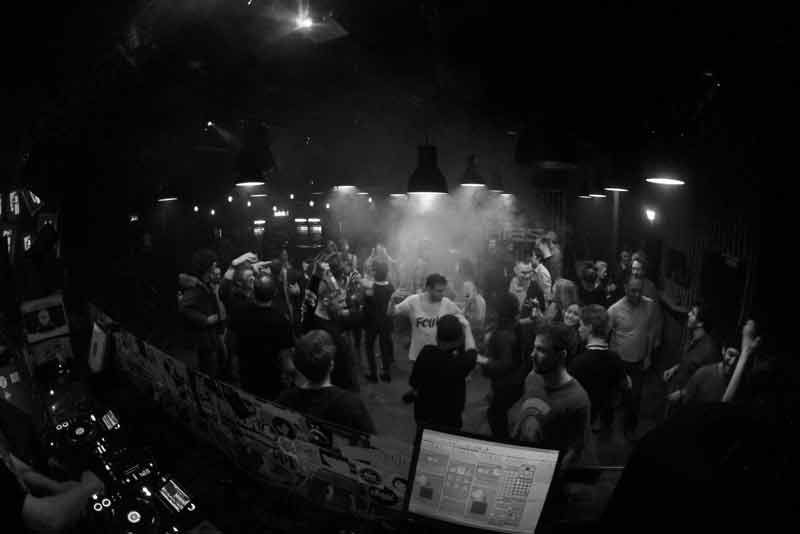
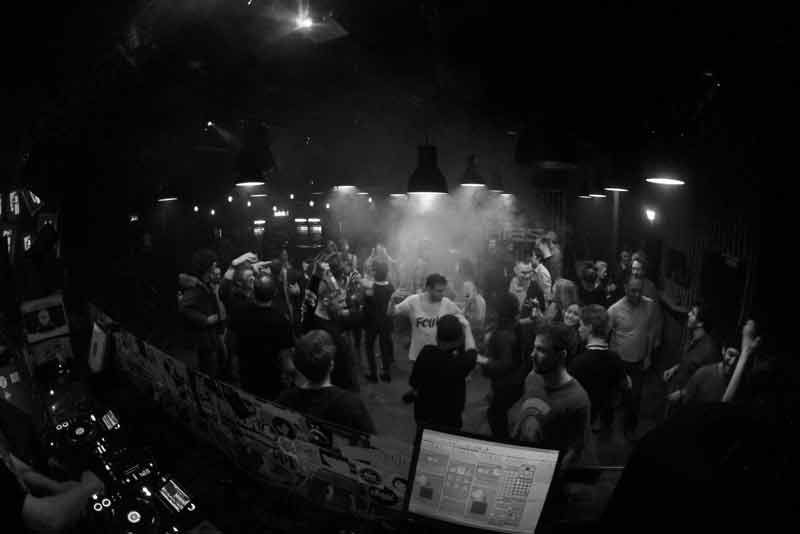

Pressemeldung Als vor gut zwei Jahren das Projekt „909 Stories“ im Club Favela in Münster seinen Anfang nahm, war der Gedanke, eine Party zu veranstalten, die eine Hommage an die TR-909 von Roland darstellt. Dieser Drumcomputer war seit 1983 eines der wichtigsten analogen Instrumente für die gesamte elektronische Musikszene. Noch heute, zu Zeiten von meist digitaler Musikproduktion, sind die einzelnen Sounds der legendären TR-909 prägend für viele Lieder. Da die Bandbreite von Genres, die der Drum-computer beeinflusst hat, sich nicht auf Techno oder House beschränkt, ist auch die 909 Stories eine Party, die sich nicht nur auf eine Richtung festlegt. Von funkigem House über treibenden Tech-House bis hin zu harmonischem Techno haben wir für jeden Tänzer was zu bieten. Nach einigen Partys im Club Favela, Der Stur (beide in Münster) und der Prinzenbar (Hamburg), findet die 909 regelmäßig im Conny Kramer am Hawerkamp in Münster statt.
Dennoch war es an der Zeit, einen Schritt nach vorne zu machen. Wir möchten, dass unsere Party auch Leute im Rest von Deutschland begeistert. Deshalb werden wir im Sommer 2016 eine vierwöchige Tour durch Deutschland antreten. Für den 9.09. haben wir das Conny Kramer und für das Wochenende um den 16.9. die Prinzenbar als zwei von vier Locations gebucht. Für das erste September-Wochenende sind wir im Gesprächen mit den Verantwortlichen vom Bullitt in München. Für den letzten Termin der Tour hoffen wir Ihren Club gewinnen zu können. Wenn Sie sich für unsere Idee begeistern können, sind wir, als 909-Familie überzeugt davon, dass wir zusammen diesen Sommer etwas aufregendes und schönes auf die Beine stellen können. Wir freuen uns darauf, von Ihnen zu hören!
909 Stories - 2 Jahre [LIVE LIVE LIVE] /w Julian Meinke & Janosch Marek
Hallo liebe Pornofreunde - aufgepasst, nach 2 Jahren gibt's die Jubiläums-Party der 909 Stories. Dieses Mal im Format der Extra-Klasse. Insgesamt 4 Live-Acts bereiten jetzt schon ihre Sets für euch vor. In den kommenden Wochen gibt's dann hier schon mal einen kleinen Vorgeschmack. Von Technoid bis Deep und harmonisch wird für jeden Geschmack etwas dabei sein. Kein Weg führt vorbei an der Technoperle "2 Jahre 909 Stories - Die volle Ladung LIVE". Falls Ihr also vorhabt euch in den nächsten Wochen mal wieder zum Feiern rauszutrauen, dann kann es eigentlich keine andere Alternative geben als die "909 Stories" am 14.05.! 909 Stories verbürgt sich für volle Zufriedenheit! Wenn Sie diese Party besuchen, haben Sie die Garantie abzutanzen!
Julian Meinke [LIVE] (909 Stories Urgestein - München/Salzburg) Janosch Marek [LIVE] (Monomucke / Kleinkariert - Oberhausen) Kollektiv 909 [LIVE & DJ-Set] (909 Stories / Warteschleife Rec.) Bronko Popovic [LIVE] (909 Stories / Konzentrat)
Wer bist du? Hi! Ich bin Roman, 25 Jahre alt und komme aus Münster. Im Alltagstrott nehme ich die Position des Studenten ein. Meine große Leidenschaft, man kann es auch Passion nennen, ist die elektronische Tanzmusik. Wie bist du zur Musik gekommen? Mein Interesse für Musik wurde sehr früh geweckt, Arme und Beine wurden damals aber eher zu Hip Hop oder Rap Beats bewegt. Unter anderem begeisterten mich Künstler (Crews) wie NWA, Wu-Tang, Dmx! Zur elektronischen Tanzmusik kam ich durch meine Schwester, die mich immer mit Funky House, Trance oder Techno (ca 2000 - 2008) beschallte. Man könnte auch sagen, dass es was in mir auslöste; dieses Gefühl kann ich bis heute nicht beschreiben. Eventuell lässt es sich mit folgenden Worten umschreiben: Gänsehaut, hoher Puls, Emotionen! Zunächst beschränkte sich mein Genre auf House, die Bandbreite meines Geschmackes ist im Laufe der Zeit sehr facettenreich und technoider geworden. Das Ziel meiner Musik ist es, verschiedenste Emotionen zu erzeugen, die nicht einheitlich (monoton) wirken sollen. Meine Musik würde ich als lebhaft, aber hart beschreiben. Wie bist du mit der 909 Stories in Kontakt gekommen? Durch Bastian Wegge, der auch Veranstalter der Partyreihe „Himmelreich“ war, kam es zum ersten Kontakt. Auf der letzen Himmelreich-Party, wo ich das Opening gespielt habe, wurde gegenseitiges Interesse geweckt. Seitdem bin ich ein ständiger Begleiter und Mitglied der Geburtsstunde „909 Stories“. Ich bin sehr neugierig was die Zukunft noch bringt; eins ist jedoch klar: die 909-Crew wächst. Wie bist du hinter dem DJ-Pult? Es ist immer sehr schwer sich selbst zu beschreiben, ich bin immer sehr fokussiert und konzentriert. Ich bin kein Typ, der hinterm DJ-Pult steht und auf gut deutsch durch die ‚Gegend hüpft‘ und wild mit den Armen rumfuchtelt. Versuche aber immer auf das Publikum einzugehen und ihnen mein Gefühl zu vermitteln, einen Teil von mir zu geben.
Wer bist du? Hola! Ich bin Andrea, 23 Jahre jung, und bin vor über 3 Jahren aus Willich am Niederrhein nach Münster gezogen, um hier Geographie zu studieren. Wie bist du zur Musik gekommen? Nachdem ich im Teeniealter in beinahe alle Genres und Subkulturen eingetaucht war (Rock, Punk, Metal, Gothic, Reggae, HipHop, Jazz) lehnte ich elektronische Musik bis zu meinem Umzug nach Münster ab. Das lag vor allem an der schickimicki Feierszene in Düsseldorf, was meinem Heimatort am nächsten liegt. Erst in Münster lernte ich durch meinen neu entstanden Freundeskreis guten Elektro und eine entspannte Clubszene kennen. Wie bist du mit der 909 Stories in Kontakt gekommen? Vor meinem Umzug nach Münster kannte ich schon Roman H. und kurz danach lernte ich Basti kennen, mit denen ich eine wilde Feier Phase hatte, in der wir gefühlt beinahe alle Münsteraner kennenlernten. Elektro ist der Soundtrack unseres Freundeskreises! Als Basti begann die ersten Parties zu organisieren, waren alle begeistert und wollten sich auch mit kleinen Aufgaben einbringen, so wie ich. Wie bist du hinter dem DJ-Pult? Da ich selber nicht auflege, sondern für das Tanzen zuständig bin, sehe ich mich eher als eine Animateurin. Da wir uns alle gemeinschaftlich in unserem Musikgeschmack weiterentwickelt haben, feiere ich die Musik der Jungs natürlich, so wie diese eben für ihre Freunde auflegen wollen.
Wer bist du? Hi, ich bin Bastian, 28 Jahre alt, lebe in Münster und bin von Beruf her Software-Entwickler. Ich verbringe viel Zeit mit meinen Passionen: Musik und Software. Habe im Dezember letzten Jahres eine Firma gegründet und versuche diese nun mit zwei Freunden in der großen Welt bekannt zu machen, wir heißen übrigens Crossbow. Wie bist du zur Musik gekommen? Seitdem ich 9 war, hat meine Mutter versucht mir diverse Musik-Instrumente beizubringen, angefangen bei der Gitarre bis hin zum Keyboard. Ich hatte 6 Jahre Keyboard-Unterricht, 3 Jahre Gesangsunterricht bei einer Opernsängerin und auch mal ein Jahr Saxophon-Unterricht. Mit 19 fing ich an mich für elektronische Musik zu interessieren, zu dem Zeitpunkt noch für Dubstep. Nach langem Herumprobieren mit Fruity-Loops und Magix Music Maker entschied ich mich, mir die erste Version von Ableton zu kaufen. Nach dem ich nun ein paar mehr Genres durchgearbeitet habe, fing ich 2012 an mich mit House & Techno zu befassen. Zu dem Zeitpunkt besorgte ich mir zwei Plattenspieler (Vestax PDX2000), einen kleinen Mixer und fing an Platten zu sammeln. Über die letzten Jahre hinweg wurde der Sound den ich spiele, sowie der Sound den ich produziere immer härter, so dass ich heute schon behaupten kann, dass ich eher Techno auflege und produziere. Wie bist du mit der 909 Stories in Kontakt gekommen? Die 909 Stories war eine Idee, die wir nach einer meiner ersten Veranstaltungen im Favela (ein Club in Münster) hatten. Die Randbedingungen waren gut, wir hatten ein großes und dankbares Publikum und konnten den Namen in der Club-Szene in Münster etablieren. Seither versuche ich immer wieder neue und aktive Menschen in die Crew zu bekommen und wir können mittlerweile um die 20 Leute zählen, die bei jeder Veranstaltung nicht nur dabei sind, sondern auch mit organisieren. Wie bist du hinter dem DJ-Pult? Man kann sowas relativ schlecht beurteilen, am besten wäre wohl, wenn ich mir eine Aufnahme angucke und dann selber eine Bewertung dazu schreibe Ich glaube ich bin sehr aktiv, ich versuche mich größtenteils zu bewegen und die Stimmung der Leute vor mir aufzunehmen und anzuheben. Da ich relativ selten alleine sondern eher zusammen mit Ivan oder Till auflege, versuche ich meinen b2b-Partner in eine Art Dauerbewegung zu bringen. Ich versuche schon dauerhaft eine Übersicht über die Menge zu haben und irgendwie jeden mitzunehmen.

Wer bist du? Mein Name ist Roman, ich bin 24 Jahre alt und lebe seit fünf Jahren in Münster. Schon immer von Musik begeistert, habe ich mich dort in verschiedenen Szenen rumgetrieben und viele Eindrücke gesammelt. Wie bist du zur Musik gekommen? Angefangen hat es mit den viel zu großen Kopfhörern, die mir um den zarten, zwei Jahre alten Balgskopf geschnallt wurden und Metallica ausstießen. Seit dieser Zeit läuft die Musik in meinem Kopf weiter, inklusive ständigem Verlangen mit Fingern und Gegenständen herumzutrommeln. Das ganze ging dann kreuz und quer durch Hip Hop, Rap, Rock, Punk, Metal, Stoner, Doom, Blues, Funk, Jazz, Electro, House, Techno. Da mein Blut im 4/4 Takt durch die Venen gepumpt wird, begleitet das Musik Machen stets das Musik Hören. Irgendwann schnappte ich mir mal eine Gitarre und brachte mir das Spielen durch jahrelange Mühen selbst bei. Darauf folgten weitere Instrumente, so blieb das Musik machen immer spannend. Letztlich kehre ich aber in ruhigen Momenten stets zur Akustik Gitarre, die die ultimative Unabhängigkeit mit sich bringt, zurück. Vor vier Jahren begann ich damit, elektronische Musik zu produzieren, was schnell auch erste Früchte trug. Einige Tracks bevölkern Jahre später noch die Playlisten verschiedenster Leute. Musik entsteht bei mir am besten aus dem Verborgenen heraus, sie ist persönlich. Das gibt mir auch die Möglichkeit mich mit meinem eigenen Tempo weiterzuentwickeln. Eingebracht hat mir das nun eine Präferenz für die exotischeren und ursprünglicheren Gefilde der elektronischen Musik. Detroit- und Chicago-Wurzeln, die einen homogenen Misch-Masch aus House, Techno und Elektro hervorbrachten. Mit dem Auflegen hab ich erst nach dem Produzieren begonnen. Zunächst noch mit einer selbst gebastelten Oberfläche in meiner DAW, später dann ausschließlich mit Platten. Wie bist du mit der 909 Stories in Kontakt gekommen? Sicherlich wie die meisten anderen hier über den gemeinsamen Nenner Basti. Kennengelernt hatten wir uns außerhalb dieses ganzen Millieus und sind später auf gemeinsame Interessen aufmerksam geworden. Zunächst hatten wir beide noch unabhängig voneinander Parties am laufen und dahingehend Erfahrungen gesammelt. Man hat sich dann hier und dort gegenseitig ausgeholfen; so kam eins zum anderen. Wir entschlossen uns dazu eine neue Partyreihe zu starten, basierend auf unseren bis dato noch an einigen Stellen wackeligen Erfahrungen. House sollte es werden. Und was versinnbildlicht House Musik mehr als die legendäre Roland TR-909 Drummachine? Der Name „909 Stories“ stieß auf Gefallen; somit war unser Kompass ausgerichtet. Konsequenterweise wurde das Spektrum dann recht schnell auch auf Techno ausgeweitet. Wie bist du hinter dem DJ-Pult? Hinter‘m DJ Pult bin ich eher konzentriert, schließlich hat man mit Schallplatten auch mehr zu tun. Ich versuch mein Publikum immer zu überraschen. Mit Musik, die sie in der Form zuvor vielleicht nicht gehört haben. Stets analog und roh, ohne Firlefanz und über die Grenzen des „4-on-the-floor“ Prinzips hinaus.

Wer bist du? Mein Name ist Ivan, ich bin 24 Jahre alt und komme aus Osnabrück. Momentan arbeite ich hauptsächliche in einer Bar in Osnabrück, dem Tiefenrausch, und bereite mich auf ein Popstudium im Bereich Producing vor. Wie bist du zur Musik gekommen? Nun ja, klingt zwar ziemlich ausgelutscht, aber ich höre Musik seitdem ich denken kann. Ich habe früh angefangen immer und überall zu tanzen (Hoch leben die 90er). Mit 6 oder 7 habe ich versucht auf einem kaputten Kindersynth Melodien zu spielen, mehr oder weniger erfolgreich… Mit 10 ungefähr habe ich angefangen Keyboard zu spielen, welches ich nach ein paar Jahren aber aufgegeben hatte. Mit 15 habe ich mir eine E-Gitarre gekauft. Mein Musikgeschmack hatte sich über Jahre entwickelt und verändert. Lange Zeit habe ich viel Rock und Metal gehört. Mit 16 dann die ersten Abipartys mitgenommen und das „Nachtleben“ für mich entdeckt. Mit 17 die ersten House & Techno Partys erlebt und direkt verliebt. Selber angefangen aufzulegen habe ich dann 2011, wie so viele zu der Zeit mit einem Controller und Laptop. Der Controller wurde aber schnell durch Plattenspieler, geliehenen Reloop 1000 mit Riemenantrieb, ersetzt. Mit Deep House fing ich an aufzulegen und befasste mich über die Zeit immer mehr mit House & Techno und bin dadurch über die Jahre treibender in meinem Sound geworden. Mit dem produzieren fing ich 2013 richtig an und entwickele mich seitdem stetig weiter, wenn es um das Mixing, Recording, und Producing an sich geht. Wie bist du mit der 909 Stories in Kontakt gekommen? Gehört habe ich von der Veranstaltung das erste mal 2014 von einem Freund aus Münster. Zu dem Zeitpunkt kannte ich nur einige wenige Leute in Münster und ich wusste auch nicht, wer hinter der 909 Stories steckte. Für mich und meine Clique war es meistens eine Reise nach Münster weshalb wir es in dem Jahr leider zu keiner Veranstaltung schafften. 2015 lernte ich dann Bastian auf dem Fusion Festival kennen und wir verstanden uns auf Anhieb. Wir fingen an zusammen zu produzieren und auf ein paar Hauspartys back-to-back aufzulegen und hatten immer einen super Flow. Im Dezember 2015 wurde ich dann gefragt ob ich auf der nächsten 909 Stories auflegen möchte und seitdem bin ich ein Mitglied der 909 Familie! Wie bist du hinter dem DJ-Pult? Ich würde mal sagen immer in Bewegung. Wenn ich auflege, versuche ich die Leute mit meinen Lieblings Tracks zum tanzen zu bringen und nicht unbedingt mit Tracks die gerade hoch in den Charts sind. Beim auflegen tanze, beziehungsweise wippe ich meistens mit. Spiele ich back-to-back mit Basti dann bleibe ich auch immer in Bewegung, da wir beide versuchen das Maximum aus dem anderen herauszuholen und das zeigt sich glaube ich am besten wenn alle am tanzen sind.

Wer bist du? Ich bin Janek, 25 Jahre alt und in Münster geboren, arbeite als Stagehand im Veranstaltungsgewerbe und beschäftige mich auch in meiner Freizeit viel mit den Themen Musik, Unterhaltung, Feiern und bin sehr Technikbegeistert. Wie bist du zur Musik gekommen? Schon im Kindergarten kam ich in den Genuss von „musikalischer Früherziehung“ und lernte zuerst Blockföte. Mit 16 habe ich dann angefangen Schlagzeug zu spielen und zeitgleich auf Jugendpartys meine ersten Erfahrungen als DJ gesammelt. Seit etwa zehn Jahren arbeite ich ehrenamtlich in einem Jugendzentrum mit und habe dort viele Erfahrungen im Bereich Jugendpartys und Live-Konzerte gesammelt. Bands mixen, als DJ aushelfen, Technik warten und aufbauen, Partys organisieren und natürlich ausgelassen zu Musik in vielen Formen feiern. Das begeistert mich noch immer wie am ersten Tag! Seit dem habe ich mich nie auf eine bestimmte Musikrichtung festgelegt und neue Musik kennen zu lernen ist fast schon zur Sucht geworden. Momentan höre ich zuhause viel Hip Hop, Reggae, Rock, aber auch und vor allem zum Feiern, Elektronische Musik. Dieser Geschmack hat sich in der letzen Zeit sehr auf härtere Genres wie Techno, Progressive oder Goa eingestellt. Ausserdem beschäftige ich mich viel mit dem Thema Lautsprecherbau und versuche elektronische und technische Hintergründe zu verstehen, um meine Lieblingsmusik möglichst perfekt hören oder Vorführen zu können. Wie bist du mit der 909 Stories in Kontakt gekommen? Vor einiger Zeit habe ich Basti als Arbeitskollegen von meinem Bruder beim Feiern kennengelernt. Das war natürlich nicht irgendeine Party, sondern eine der ersten 909-Stories hier in Münster. Schnell war ich infiziert von Bastis Ideen und Konzepten dieses Projekt auch in Zukunft voranzutreiben und wachsen zu lassen und habe meine Unterstützung angekündigt. Da ich beim Feiern gehen nicht nur Wert auf gute Musik lege, sondern es mich vor allem dort hält, wo man nette Leute und Freunde trifft ist mir die 909-Idee sehr ans Herz gewachsen. Wie bist du hinter dem DJ-Pult? Im Rahmen der 909-Stories habe ich mich bis jetzt nur hinter das Kassen-Pult getraut da ich momentan noch viel am DJ-Controller übe und sich meine Passion für elektronische Musik in der Vergangenheit hauptsächlich auf das Hören und dazu Tanzen gehen beschränkt hat. Fest steht: Die 909-Familie wäre der richtige Platz für mich, um mein Live Debut zu feiern!
Wer bist du? Ich bin kein Freund der vielen Worte, also kurz und knapp: Mein Name ist Julian und ich finde Techno Musik auch ganz nett. 2011 habe ich mit dem DJing angefangen und seit dem regelmäßig, größtenteils in London, gespielt. Im letzten Jahr habe ich eine Auszeit vom Djing genommen, um mich auf meine eigenen Produktionen zu konzentrieren. Wie bist du zur Musik gekommen? Ich hab zwar als Kind Gitarrenunterricht gehabt, das hat jedoch nichts gebracht und hat mich damals auch nicht interessiert – wie falsch ich damals lag. Die klassische Gitarre musste schnell elektronischen Beats weichen und mit dem Umzug nach London war die Techno Addiction völlig besiegelt. Wie bist du mit der 909 Stories in Kontakt gekommen? Ich war eingeladen in Münster auf einer Party aufzulegen, auf der ich einen Teil der restliche Crew kennengelernt habe. Aus dem Erfolg des Abends entstand die Überlegung eine eigene Party Reihe zu starten und somit war 909 Stories geboren. Wie bist du hinter dem DJ-Pult? Deep melodic techno; im vergleich zur restlichen Crew spiel ich auch gerne mal etwas langsamere Musik. Insgesamt am liebsten in Moll und mit richtig fett Bass. Egal ob London, Buenos Aires oder Münster; bis jetzt hat es noch keiner geschafft, bei meinen Sets still zu sitzen.
Wer bist du? Meine Name ist Micha, 26 Jahre alt und seit 3 Jahren als freischaffender Künstler selbstständig. Vorher habe ich zwei Jahre Germanistik und Philosophie auf Lehramt studiert, es jedoch zu Gunsten der Musik an den Nagel gehängt. Wie bist du zur Musik gekommen? Musik ist schon seit jungen Jahren der Hauptbestandteil meiner freien Zeit. Im Alter von sieben wurde ich auf die Yamaha Musicschool in Hamburg geschickt und habe diese bis zum 13. Lebensjahr besucht. Hierbei mehrere Instrumente gelernt und erste Bühnenerfahrung gesammelt. Wie bist du mit der 909 Stories in Kontakt gekommen? Mein erster Kontakt zur 909-Crew fand in der Prinzenbar statt, wo ich für einen Auftritt eingeladen war. Da mir diese Party in Erinnerung blieb und man sich gut verstand, freut es mich umso mehr auch in Zukunft Teil der Planung sein zu dürfen. Wie bist du hinter dem DJ-Pult? Hinterm DJ-Pult zählt für mich am meisten die Intuition und Authentizität, welche glücklicherweise die Oberhand gegenüber Erwartungsdruck und Nervosität gewinnt, sobald ich die Kontrolle über Sound und Bühne habe. Musik ist meiner Ansicht nach auf so vielen Ebenen wirksam, dass mir die Verbindung zum Publikum am wichtigsten ist, denn sie ist essentiell um die Anwesenden nicht nur musikalisch sondern auch mit einer Dramaturgie und durch Abwechslung auf eine Reise zu schicken.
Wer bist du? Ich bin Till Möcklinghoff und wohne seit 3 Jahren in Münster. Ich studiere Pharmazie und neben der Musik, ist Fußball meine Leidenschaft. Wie bist du zur Musik gekommen? Mit 17 Jahren war ich zum ersten Mal in einem Club und habe Chris Liebing gesehen. Der Techno, den er gespielt hat, hat mich sofort in den Bann gezogen. Durch meinen Vater habe ich früher schon viel Jazz gehört und auch gerne Hip-Hop. Durch diese Einflüsse habe ich zunächst viel groovigen House gehört. Es dauert eine Weile bis ich auch privat Techno gehört habe und nicht nur zum Feiern. Wie bist du mit der 909 Stories in Kontakt gekommen? Nach ungefähr einem halben Jahr in Münster habe ich durch Partys am Hawerkamp Bastian Wegge kennengelernt und bin wenige Monate danach auch im gleichen Haus eingezogen. Das Projekt 909 entstand kurz danach im Mai 2014. Zunächst habe ich nur mitgeholfen beim Aufbauen und Organisieren. Irgendwann hat mich Basti dann auch in das eigentlich Organisationsteam mit aufgenommen. Wie bist du hinter dem DJ-Pult? Am liebsten spiele ich Musik zu der ich auch abgehen würde. Ich bin ja auch vom Tanzengehen zum Auflegen gekommen und nicht andersherum. Deswegen ist es mir wichtig der Crowd auch zu vermitteln was sie zu tun hat. Und zwar Tanzen.
909 Stories - In zwei Jahren wurde aus einer kleinen Party im Rahmen von Freunden eine ernst zu nehmende Veranstaltungsreihe in Münster und Hamburg. Das Team - damals noch zu viert - wuchs seit der ersten Veranstaltung auf die stolze Summe von 18 Leuten. Nicht zu vergessen sind die Leute, die zahlreich zu unseren Parties gekommen sind und aus der 909 Stories das gemacht haben, worauf wir heute bauen, um unsere Tour zu planen und zu veranstalten. Wir schreiben den 14.05.2014, 14:00 Uhr - Der Aufbau für die erste 909 Stories findet im Favela (Hawerkamp, Münster) in familiärer Atmosphäre statt. Dekoration spielte auf unseren Veranstaltungen schon immer eine große Rolle. So haben wir uns durch diverse Arten von Dekoration gewurschtelt und sind stets mit Visuals und Bannern ausgestattet. Schilder auf der Tanzfläche, die in großen Lettern zum „WEITERMACHEN“ animieren oder die Namen der DJs zeigen, die gerade auflegen, gehörten ebenfalls zur Vorbereitung. Innerhalb der nächsten drei Stunden verwandelten wir das Favela in die 909 Höhle. Dazu gehörte eine abgehangene Decke, das Verschließen der Fenster & Rolladen für den Sunrise-Effekt und eine eigens dafür gebaute Visual-Konstruktion.
Danach dann der wichtigste Teil der Vorbereitung einer Party: Vorschlafen. Unsere Parties und allgemein Parties im Favela sind und waren dafür bekannt, bis in die Morgenstunden zu gehen. „Das kann schon mal 8-9 Uhr werden“, sagen wir immer beherzt wenn die Leute fragen, wie lange wir denn noch machen. Gegen 22 Uhr ging es dann noch mal mit allen gemeinsam etwas essen und zusammen in den Club. Die anfänglichen Stunden am Hawerkamp sind durch gähnende Leere bekannt; der Großteil der feiernden Menschen macht sich nämlich erst zwischen zwei und vier Uhr auf den Weg. Als wir um drei Uhr volles Haus hatten und der Club-Besitzer mit einem Lächeln herumlief, war für uns klar: Der Abend ist jetzt schon ein Erfolg.
 
